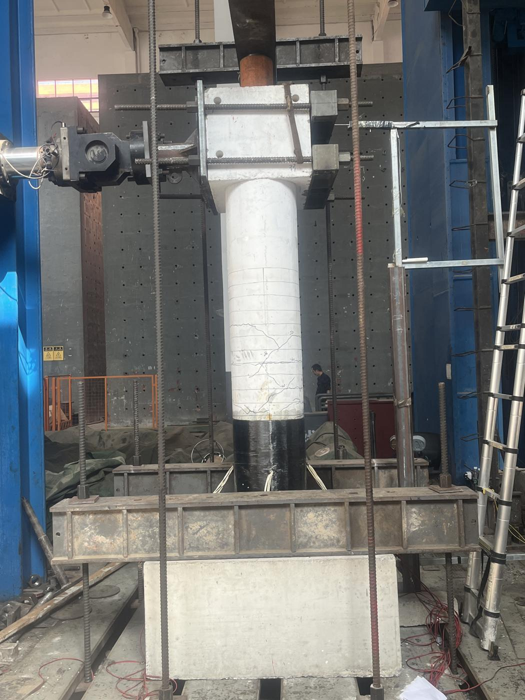
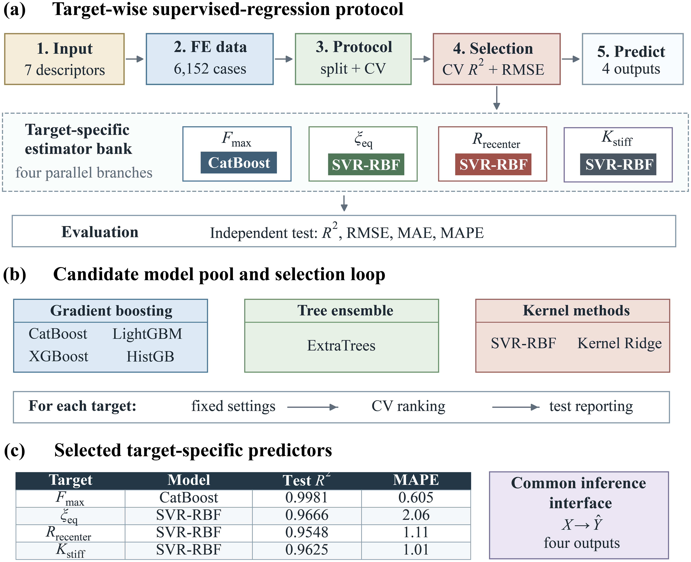
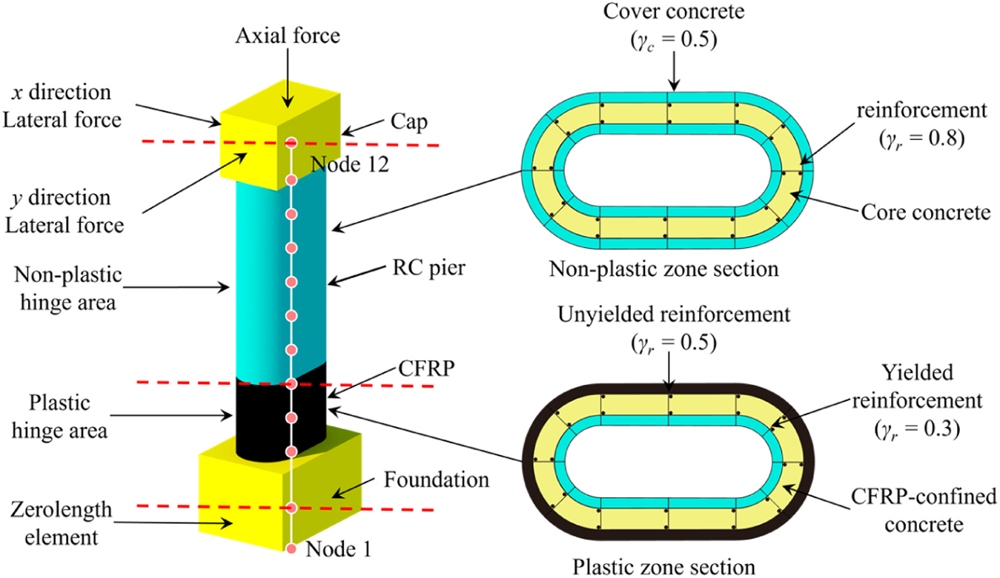

Academic profile · 2026
Song Tan 谭松
Master's Student硕士研究生
School of Civil Engineering, Central South University中南大学土木工程学院
Structural engineeringEarthquake resilienceMachine learning
01
Profile个人简介
I study how earthquake-damaged high-speed railway bridges can be repaired and returned to service, with a particular focus on CFRP-repaired bridge piers.我研究震损高铁桥梁的修复与性能恢复，重点关注 CFRP 修复桥墩。
Using experiments, nonlinear finite-element analysis, and interpretable machine learning, I examine how much seismic performance repaired piers recover and how those repairs influence the bridge and track.我通过试验、非线性有限元分析和可解释机器学习，考察修复后的桥墩能恢复多少抗震性能，以及修复对桥梁和轨道的影响。
I am currently a master's student at Central South University, advised by Liqiang Jiang and Fengqi Guo.我目前在中南大学攻读硕士学位，师从江力强老师和郭风琪老师。
02
Selected publications代表论文


03
Education教育经历
Central South UniversitySchool of Civil Engineering · Master's Student土木工程学院 · 硕士研究生
Chang'an UniversitySchool of Highway · Undergraduate公路学院 · 本科生